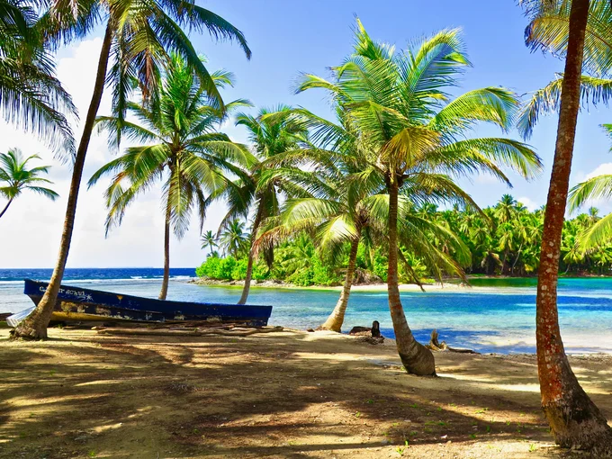

Quần đảo Nam Du
Quần đảo Nam Du ở đâu ?
Quần Đảo Nam Du (tên cũ: Hòn An Sơn) nằm cách bờ biển Rạch Giá khoảng 120km (65 hải lý) - trực thuộc huyện Kiên Hải, tỉnh Kiên Giang. Chỉ cách Sài Gòn tầm 250km, Nam Du là địa điểm lui tới thường xuyên của giới “ghiền” phượt miền Nam. Quần đảo này quy tụ 21 hòn đảo lớn nhỏ, nổi tiếng nhất phải kể đến là Đảo Nam Du (Hòn Lớn), Hòn Hai Bờ Đập, Hòn Mấu và Hòn Ngang.
Phần lớn đảo thuộc Quần Đảo Nam Du đều lưu giữ được nét đẹp hoang sơ nguyên thuỷ - không gian nghỉ dưỡng tuyệt vời cho những bạn cần tạm thời “chạy trốn” khỏi nhịp sống xô bồ thường nhật. Hầu hết du khách sẽ chọn nghỉ đêm lại khách sạn hoặc resort trên Đảo Nam Du; sau đó, đi cano để tham quan các đảo lân cận. Vì không quá tấp nập khách phương xa nên dịch vụ ăn uống, vui chơi, giải trí trên Đảo Nam Du thuộc dạng “cây nhà lá vườn”, thuộc sở hữu của người dân địa phương hiền hoà, chân chất. Bạn chẳng cần phải e ngại về chất lượng phục vụ hay giá thành đâu.
Nên đi du lịch Nam Du vào tháng mấy ?
Bắt đầu từ tháng 11 và kéo dài đến hết tháng 4 của năm kế tiếp, thiên nhiên trên Đảo Nam Du bước vào giai đoạn rực rỡ nhất; mặt trời ướm chiếc chăn nắng vàng lấp lánh lên rừng cây tươi tốt, biển xanh lặng sóng cùng không khí trong lành. Đây là thời điểm vàng của chuỗi trải nghiệm dưới nước như bơi lội, lặn biển ngắm san hô hoặc thong dong câu cá. Bạn không nên đi du lịch Nam Du từ tháng 5 đến tháng 10 vì đó là mùa mưa bão, biển động mạnh - chẳng những không đẹp mà còn có biết bao nhiêu nguy hiểm rình rập.
Tuyến đường đi Nam Du
Từ thành phố Hồ Chí Minh, bạn đi xe khách đến thành phố Rạch Giá, tỉnh Kiên Giang rồi đi tàu đến Đảo Nam Du. Xe khách tuyến Sài Gòn - Rạch Giá thường khởi hành từ Bến Xe Miền Tây - 395 Kinh Dương Vương, An Lạc, Bình Tân, TP.HCM.
Từ thành phố Hồ Chí Minh, bạn đi máy bay đến Phú Quốc rồi đi tàu đến Đảo Nam Du. Đây là tuyến đường mới, phù hợp cho các bạn nào muốn kết hợp khám phá Đảo Nam Du trong hành trình